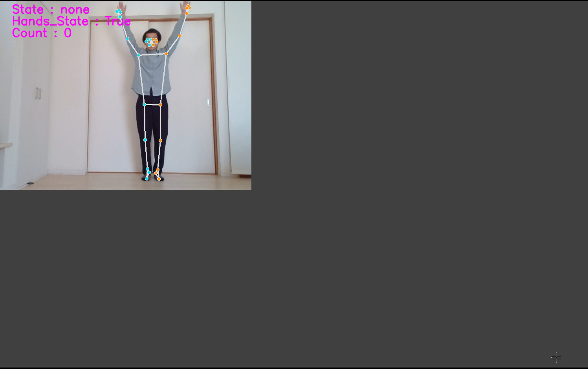

歩行判定プログラム

| 使用言語など | Python |
|---|---|
| 作成経緯 | 今後の研究で姿勢推定技術を用いて陸上選手の走行中の姿勢を推定し、課題点を可視化する開発を行うことを予定している。 また、将来的に姿勢推定技術を新しいゲームの開発やスポーツ選手の姿勢改善などに応用したいと考えているため、姿勢推定技術について学んでおきたいと考えた。 そこで、初歩の目標として、カメラから歩行を検出する本プログラムの開発に取り組んだ。 |
| 内容 |
mediapipeライブラリを用いてカメラからリアルタイムで骨格情報を読み取る。
そして、足から膝までの高さの8分の1を閾値に設定し、この閾値よりも足の位置が上に上がっていたら「足が上がった」と判定する。
そして、上がった足の位置が閾値よりも下となったら「足を下ろした」と判定しこれを一歩とする。
このアルゴリズムを用いて歩行判定を行った。 しかし、足踏みをしても正しく歩行判定されないという困難があった。 これは、推定を1フレームごとに繰り返し行うため、閾値や足の状態がリセットされることが原因であった。 そこで、閾値の問題については条件分岐を用いて初回に算出した閾値をグローバル変数に格納するように工夫したことで解消した。 しかし足の状態は正しく判定できなかった。そこで、私は同様の研究を行っていた先輩に協力を依頼し、デバッグを繰り返したことでこの問題も解消させることができた。 |
| プログラムファイル | Driveリンク |
| 実行結果 | 実行結果リンク |